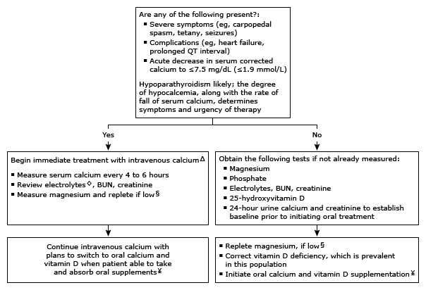

Evaluation of hypocalcemia and low or low-normal parathyroid hormone in adults*¶

This algorithm is intended for use with additional UpToDate content on hypocalcemia and hypoparathyroidism.
BUN: blood urea nitrogen; PTH: parathyroid hormone. * The normal range for serum calcium is approximately 8.6 to 10.2 mg/dL (2.15 to 2.54 mmol/L) and for intact PTH approximately 10 to 65 pg/mL (1.1 to 6.9 pmol/L). Interpretation of a specific abnormal test result should be based upon the reference range reported with that result. Measured calcium concentration should be corrected for any abnormality in serum albumin, using a calcium correction formula. ¶ A serum PTH within the reference range in a patient with hypocalcemia is inappropriately normal. Δ Intravenous calcium is not warranted as initial therapy for asymptomatic hypocalcemia in patients with impaired renal function in whom correction of hyperphosphatemia and of low circulating 1,25-dihyroxyvitamin D are usually the primary goals. ◊ Profound hypokalemia may occasionally induce muscle cramping or even tetany. § Hypocalcemia should resolve within minutes or hours after restoration of normal serum magnesium concentrations if hypomagnesemia was the cause of the hypocalcemia. ¥ In addition to calcium, patients with hypoparathyroidism require vitamin D supplementation, which often permits a lower dose of calcium supplementation.